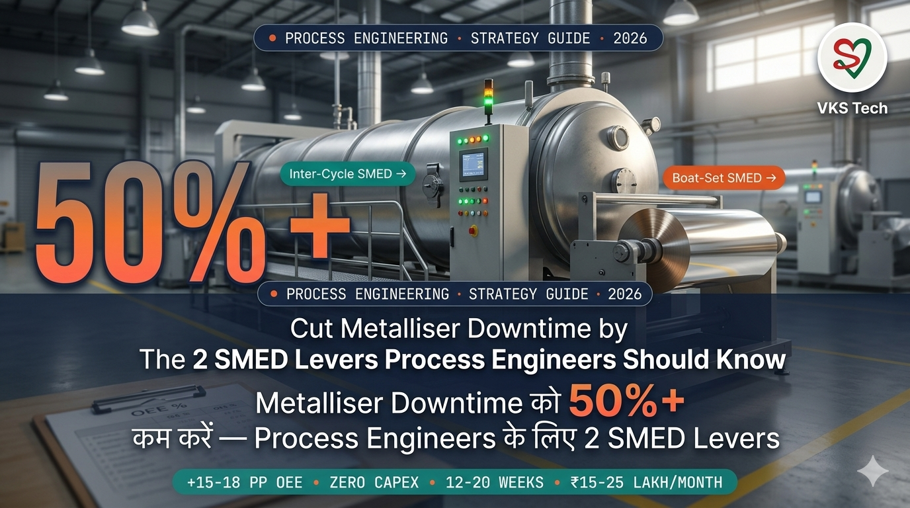
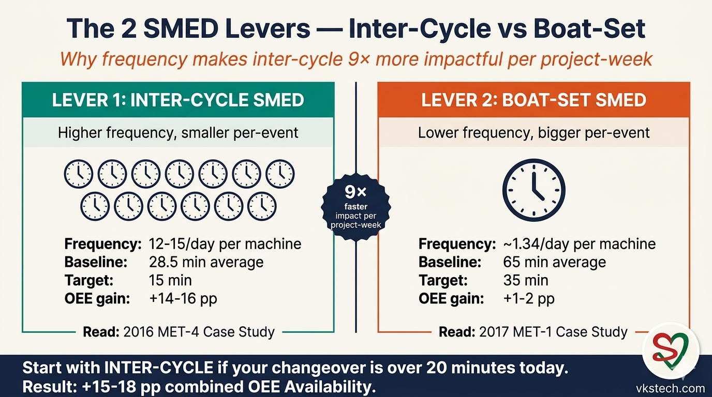
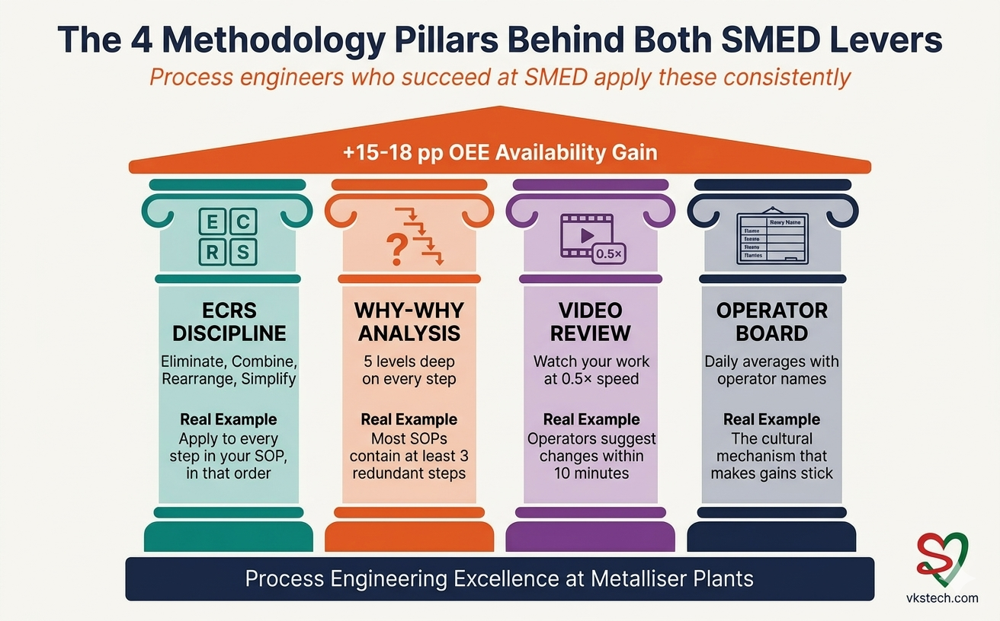
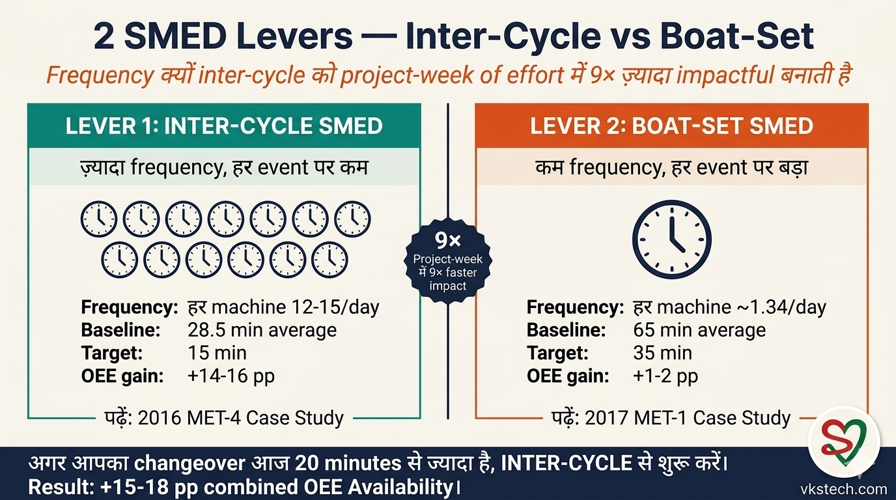
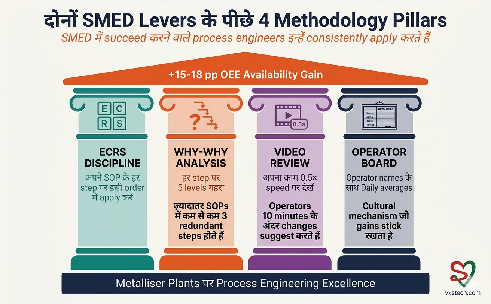

🚀 Cut Metalliser Downtime by 50%+ — The 2 SMED Levers Process Engineers Should Know
📖 7-min read | Process Engineering Overview | Published April 2026 | Strategic guide
If you are a process engineer at a metalliser plant, you already know the daily pain. The machine is built to run 24×7, but actual run time often lands at 60-65 percent of that. The gap is mostly setup time. Boat changes, roll changes, alignment checks, cleaning routines. Hours every shift. Lakhs every month.
I have spent 9+ years working with metalliser teams across India, leading SMED projects on real shop floors and reviewing many more as a peer. Across every plant I have seen, the same pattern repeats: downtime reduction is not one big problem — it is two distinct problems, and the techniques for each are different. This post is your 6-minute orientation. By the end, you will know which lever to pull first at your plant, and where to go for the deep methodology.
Metalliser setup time is dominated by two changeover events: inter-cycle (jumbo-to-jumbo) and boat-set (full source replacement). They have different frequencies, different durations, and different SMED techniques. Treating them as one problem is the most common mistake process engineers make.
🎯 The 2 SMED Levers — At a Glance
Every metalliser plant in India has these two changeover events on every shift. Here is the comparison, drawn from real plant data I have worked with:
| Dimension | Lever 1: Inter-Cycle Changeover | Lever 2: Boat-Set Changeover |
|---|---|---|
| What happens | Roll/jumbo change, no boat replacement | Full source replacement (boats + wires + clamps) |
| Frequency per machine per day | 12-15 events | ~1.34 events |
| Typical baseline duration | 20-30 min | 50-65 min |
| Achievable target | 15 min | 35 min |
| OEE Availability gain | +14-16 percentage points | +1-2 percentage points |
| Project duration | 4-8 weeks | 8-12 weeks |
| Capex required | Near-zero | Near-zero |
The frequency difference is the key insight. Inter-cycle happens 9× more often, so smaller per-event savings compound to much bigger plant-level impact. I will say this once and clearly: if you are starting fresh, start with inter-cycle. The math favours it by roughly 9×.

⚡ Lever 1 — Inter-Cycle SMED (Higher Impact, Lower Effort)
Inter-cycle changeover is the silent killer of OEE. Twelve to fifteen events per day, average 25-30 minutes each, and most teams have stopped trying to improve it because "we already optimised that years ago." That belief is almost always wrong.
In a 2016 project at a MET-4 plant I reviewed, a 9-person team cut average inter-cycle time from 28.5 minutes to a 15-minute target — a 47% reduction. They documented 13 specific improvements, each with exact second savings. The methodology that broke their "no scope" mindset is repeatable at any plant.
The five techniques that mattered most:
- Why-Why analysis on every SOP step — questioning each step's logic, five levels deep
- Move activities offline — anything that can happen before chamber opens, should
- Combine sequential motions — wire cutting and guide pipe cleaning are one motion, not two
- Custom tools where standard ones are wrong — clamp cleaners, boat surface scrappers
- Daily operator board — names and numbers visible to everyone, the cultural mechanism that makes gains stick
📖 Read the Full Case Study
All 13 improvements with exact second savings. The 2016 project narrative. The Why-Why methodology with worked examples. Free Action Card PDF (6 pages with blank formats) and an Excel savings calculator that lets you plug in your own plant numbers.
→ Read: When Operators Said "No Scope for Improvement" — A 2016 Roll Changeover SMED Case Study
🛠️ Lever 2 — Boat-Set SMED (Lower Impact per Event, But Worth It)
Boat-set changeover is the bigger event but happens less often. Once every ~18 hours per machine, taking 50-65 minutes each. Teams typically focus their improvement energy here because it is the most visible single block of downtime — but the per-event savings have less plant-level impact than inter-cycle work.
Still, boat-set SMED is worth doing for three reasons. First, the savings still add up: 30 minutes saved per event × ~1.34 events per day per machine = ~40 minutes per day per machine. Second, the choreography improvements (3-tool-box system, 22-item check list, 3-person synchronisation) become reusable for inter-cycle work. Third, the OEE recovery is permanent — once captured, it does not regress.
In a 2017 project I led documentation on at a MET-1 plant, a 10-person team cut boat change time from 65 to 35 minutes over 12 weeks. The methodology was the same ECRS discipline, applied to a different changeover type with different specifics. The key wins:
- 3 tool box system — dedicated boxes per workstation, no tool fetching during changeover
- 22-item 1-hour-prior check list — everything staged before chamber opens
- 3-person synchronised choreography — Source / Loading / Common operators, no idle time
- Daily number tracking — board with operator names and changeover times
📖 Read the Full Case Study
The full 8-week + 4-week project narrative. All 76 activities documented. The 3 tool box system specifications. The 22-item check list. Free Action Card PDF (6 pages with blank formats) for shop floor use.
→ Read: How I Cut Metalliser Boat Change Time from 65 to 35 Minutes — A 2017 Case Study
🧠 The 4 Methodology Pillars Behind Both Levers
Whether you are tackling inter-cycle or boat-set, the underlying methodology is the same. Process engineers who succeed at SMED apply these four pillars consistently:

1. ECRS Discipline. Eliminate, Combine, Rearrange, Simplify. Toyota's framework from the 1960s, still the most reliable way to analyse activities. Apply it to every step in your SOP, in that order. Eliminate first — it is the highest-leverage move.
2. Why-Why Analysis. For every step that survives ECRS, ask "why is this necessary?" five times. The fifth answer reveals whether the step is truly needed. Most SOPs contain at least 3 redundant steps. Why-Why is how you find them.
3. Video Review. Operators see what they would never notice while doing the work. Film one changeover, then sit with operators and watch at 0.5× speed. They will start suggesting changes within 10 minutes. This is where operator-led innovations come from — like the apron with pockets, the two-wires entry, and the simultaneous wire-cutting and guide-pipe-cleaning motion.
4. Operator Tracking Board. Daily averages, names visible, near the machine. Without this, any SMED gain regresses within months. With it, the gain compounds because operators internalise the goal. This is the cultural mechanism that makes the technical changes permanent.
⚠️ What Process Engineers Often Get Wrong
Three common mistakes I see process engineers make when starting SMED projects:
Mistake 1 — Skipping the measurement phase. Teams jump to "let us improve" without timing 100 cycles first. Without baseline data, you cannot prove gains, you cannot identify the longest activities, and you cannot get operator buy-in. Measure first. Always.
Mistake 2 — Treating inter-cycle and boat-set as one project. They have different scopes, different durations, different operator counts, different choreographies. Run them as separate projects with separate teams if needed. Combining them dilutes focus.
Mistake 3 — No daily measurement after rollout. The technical gains are easy to capture in 4-8 weeks. The hard part is making them stick. Without a daily operator board with names visible, you will regress within two months. The board is not optional.
🎯 Where to Start at Your Plant
If your inter-cycle changeover is over 20 minutes today, that is your fastest path to OEE improvement. Start there. Read the 2016 inter-cycle case study for the full methodology and download the Excel calculator to project your own plant savings.
If your boat-set changeover is over 50 minutes today, tackle that next. Read the 2017 boat change case study for the choreography, tool box system, and 22-item check list.
If you do both, expect +15 to +18 percentage points of OEE Availability recovery at the plant level, with under ₹10,000 of capex (custom tools only). Project duration combined: 12-20 weeks. Realistic monthly margin recovery: ₹15-25 lakh per plant.
SMED is one half of the metalliser improvement story. The other half is metallised waste reduction. Together they recover an estimated ₹1.4 to ₹1.8 crore per year for a typical 2-machine plant. The full series:
- This blog (#25): Hub overview of the 2 SMED Levers (you are here)
- Blog #22: Boat-Set SMED — 2017 case study (Lever 2 deep dive)
- Blog #23: Inter-Cycle SMED — 2016 case study (Lever 1 deep dive)
- Blog #24: Metallised Waste 1.8% → 0.9% — operator-discipline playbook (~₹47 lakh/year per machine)
- Blog #26 (coming next): Web Break Reduction at Metalliser — Target Zero kg (the 6th waste source needing cross-departmental action)
🚀 Metalliser Downtime को 50%+ कम करें — Process Engineers के लिए 2 SMED Levers
📖 8-min read | Process Engineering Overview | April 2026 में published | Strategic guide
अगर आप metalliser plant पर process engineer हैं, आप daily pain जानते हैं। Machine 24×7 चलाने के लिए बनी है, पर actual run time often 60-65 percent पर land होता है। Gap ज़्यादातर setup time का है। Boat changes, roll changes, alignment checks, cleaning routines। हर shift में घंटे। हर महीना लाखों।
मैंने 9+ साल India के metalliser teams के साथ काम किया है, real shop floors पर SMED projects lead किए हैं और कई और peer reviewer के रूप में देखे हैं। हर plant में same pattern repeat होता है: downtime reduction एक बड़ी problem नहीं है — दो अलग problems हैं, और दोनों के लिए techniques अलग हैं। ये post आपका 6-minute orientation है। End तक आप जान जाएँगे आपके plant पर पहले कौन सा lever pull करना है, और deep methodology कहाँ मिलेगी।
Metalliser setup time पर दो changeover events का dominate है: inter-cycle (jumbo-to-jumbo) और boat-set (full source replacement)। दोनों की frequency, duration, और SMED techniques अलग हैं। इन्हें एक problem treat करना process engineers की सबसे common mistake है।
🎯 2 SMED Levers — एक नज़र में
India के हर metalliser plant पर हर shift पर ये दो changeover events होते हैं। Real plant data से comparison जिसके साथ मैंने काम किया है:
| Dimension | Lever 1: Inter-Cycle Changeover | Lever 2: Boat-Set Changeover |
|---|---|---|
| क्या होता है | Roll/jumbo change, boat replacement नहीं | Full source replacement (boats + wires + clamps) |
| हर machine हर दिन frequency | 12-15 events | ~1.34 events |
| Typical baseline duration | 20-30 min | 50-65 min |
| Achievable target | 15 min | 35 min |
| OEE Availability gain | +14-16 percentage points | +1-2 percentage points |
| Project duration | 4-8 weeks | 8-12 weeks |
| Capex required | लगभग zero | लगभग zero |
Frequency का difference key insight है। Inter-cycle 9× ज़्यादा होता है, इसलिए छोटे per-event savings बहुत बड़े plant-level impact पर compound होते हैं। एक बार साफ़ कह दूँ: अगर आप fresh start कर रहे हैं, inter-cycle से शुरू करें। Math इसके favour में roughly 9× है।

⚡ Lever 1 — Inter-Cycle SMED (बड़ा Impact, कम Effort)
Inter-cycle changeover OEE का silent killer है। हर दिन 12-15 events, average 25-30 minutes each, और ज़्यादातर teams improve करना छोड़ चुकी हैं क्योंकि "हमने वो साल पहले optimise कर लिया।" वो belief लगभग हमेशा ग़लत होती है।
2016 के एक MET-4 plant project में जिसे मैंने review किया, एक 9-person team ने average inter-cycle time 28.5 minutes से 15-minute target तक काटा — 47% reduction। उन्होंने 13 specific improvements document किए, हर एक के exact second savings के साथ। Methodology जिसने उनकी "no scope" mindset तोड़ी, हर plant पर repeatable है।
पाँच techniques जो सबसे ज़्यादा matter करती हैं:
- हर SOP step पर Why-Why analysis — हर step की logic question करना, पाँच levels गहरा
- Activities offline करो — जो chamber खुलने से पहले हो सकता है, होना चाहिए
- Sequential motions combine करो — wire cutting और guide pipe cleaning एक motion है, दो नहीं
- Standard tools ग़लत हों तो custom tools — clamp cleaners, boat surface scrappers
- Daily operator board — सबको visible names और numbers, cultural mechanism जो gains stick रखता है
📖 Full Case Study पढ़ें
सभी 13 improvements exact second savings के साथ। 2016 project narrative। Why-Why methodology worked examples के साथ। Free Action Card PDF (6 pages blank formats के साथ) और Excel savings calculator जो आपके plant numbers plug in करने देता है।
🛠️ Lever 2 — Boat-Set SMED (हर event पर कम Impact, पर worth it)
Boat-set changeover बड़ा event है पर कम होता है। हर machine ~18 hours में एक बार, हर event 50-65 minutes। Teams typically अपनी improvement energy यहाँ focus करती हैं क्योंकि ये सबसे visible single block of downtime है — पर per-event savings का plant-level impact inter-cycle work से कम है।
फिर भी boat-set SMED तीन reasons से worth है। पहला, savings अभी भी add होती हैं: हर event 30 minutes saved × हर machine हर दिन ~1.34 events = हर machine हर दिन ~40 minutes। दूसरा, choreography improvements (3-tool-box system, 22-item check list, 3-person synchronisation) inter-cycle work के लिए reusable बनती हैं। तीसरा, OEE recovery permanent है — एक बार capture हो जाए, regress नहीं होती।
2017 के एक MET-1 plant project में जिसकी documentation मैंने lead की, एक 10-person team ने 12 weeks में boat change time 65 से 35 minutes तक काटा। Methodology वही ECRS discipline थी, अलग changeover type पर अलग specifics के साथ apply। Key wins:
- 3 tool box system — हर workstation के dedicated boxes, changeover के दौरान कोई tool fetching नहीं
- 22-item 1-hour-prior check list — chamber खुलने से पहले सब कुछ staged
- 3-person synchronised choreography — Source / Loading / Common operators, कोई idle time नहीं
- Daily number tracking — operator names और changeover times वाला board
📖 Full Case Study पढ़ें
पूरा 8-week + 4-week project narrative। सभी 76 activities documented। 3 tool box system specifications। 22-item check list। Shop floor use के लिए free Action Card PDF (6 pages blank formats के साथ)।
→ पढ़ें: मैंने Metalliser Boat Change Time को 65 से 35 Minutes तक कैसे लाया — एक 2017 Case Study
🧠 दोनों Levers के पीछे 4 Methodology Pillars
Inter-cycle tackle कर रहे हों या boat-set, underlying methodology वही है। SMED में succeed करने वाले process engineers इन चार pillars को consistently apply करते हैं:

1. ECRS Discipline। Eliminate, Combine, Rearrange, Simplify। 1960s का Toyota framework, अभी भी activities analyse करने का सबसे reliable तरीक़ा। अपने SOP के हर step पर apply करें, इसी order में। पहले Eliminate — वो highest-leverage move है।
2. Why-Why Analysis। ECRS survive करने वाले हर step पर पाँच बार पूछें "ये क्यों ज़रूरी है?" पाँचवाँ जवाब reveal करता है step truly needed है या नहीं। ज़्यादातर SOPs में कम से कम 3 redundant steps होते हैं। Why-Why उन्हें ढूँढने का तरीक़ा है।
3. Video Review। Operators वो देखते हैं जो काम करते हुए कभी notice नहीं करते। एक changeover film करें, फिर operators के साथ बैठकर 0.5× speed पर देखें। 10 minutes के अंदर वो changes suggest करना शुरू कर देंगे। Operator-led innovations यहीं से आते हैं — pockets वाला apron, two-wires entry, simultaneous wire-cutting और guide-pipe-cleaning motion।
4. Operator Tracking Board। Daily averages, names visible, machine के पास। इसके बिना कोई SMED gain महीनों में regress हो जाता है। साथ में, gain compound होता है क्योंकि operators goal को internalise करते हैं। यही cultural mechanism है जो technical changes को permanent बनाता है।
⚠️ Process Engineers अक्सर क्या ग़लत करते हैं
SMED projects शुरू करते वक़्त process engineers की तीन common mistakes:
Mistake 1 — Measurement phase skip करना। Teams पहले 100 cycles time किए बिना "improve करते हैं" पर jump कर जाती हैं। Baseline data के बिना, आप gains prove नहीं कर सकते, longest activities identify नहीं कर सकते, और operator buy-in नहीं ला सकते। पहले measure करें। हमेशा।
Mistake 2 — Inter-cycle और boat-set को एक project treat करना। इनके अलग scopes, अलग durations, अलग operator counts, अलग choreographies हैं। ज़रूरत हो तो अलग teams के साथ अलग projects चलाएँ। Combine करना focus dilute करता है।
Mistake 3 — Rollout के बाद daily measurement नहीं। Technical gains 4-8 weeks में easy capture होते हैं। Hard part उन्हें stick बनाना है। Names visible वाले daily operator board के बिना, दो महीनों में regress हो जाएँगे। Board optional नहीं है।
🎯 अपने Plant पर कहाँ से शुरू करें
अगर आपका inter-cycle changeover आज 20 minutes से ज़्यादा है, वही OEE improvement का सबसे fastest path है। वहाँ से शुरू करें। Full methodology के लिए 2016 inter-cycle case study पढ़ें और अपने plant savings project करने के लिए Excel calculator download करें।
अगर आपका boat-set changeover आज 50 minutes से ज़्यादा है, वो next tackle करें। Choreography, tool box system, और 22-item check list के लिए 2017 boat change case study पढ़ें।
दोनों करते हैं तो plant level पर +15 से +18 percentage points OEE Availability recovery expect करें, ₹10,000 से कम capex में (सिर्फ़ custom tools)। Combined project duration: 12-20 weeks। Realistic monthly margin recovery: हर plant ₹15-25 लाख।
SMED metalliser improvement story का एक आधा है। दूसरा आधा है metallised waste reduction। दोनों मिलकर typical 2-machine plant के लिए लगभग ₹1.4 से ₹1.8 करोड़ per year recover करते हैं। Full series:
- ये blog (#25): 2 SMED Levers का Hub overview (आप यहाँ हैं)
- Blog #22: Boat-Set SMED — 2017 case study (Lever 2 deep dive)
- Blog #23: Inter-Cycle SMED — 2016 case study (Lever 1 deep dive)
- Blog #24: Metallised Waste 1.8% → 0.9% — operator-discipline playbook (~₹47 लाख/year per machine)
- Blog #26 (आगे आ रहा है): Metalliser पर Web Break Reduction — Target Zero kg (छठा waste source जिसे cross-departmental action चाहिए)